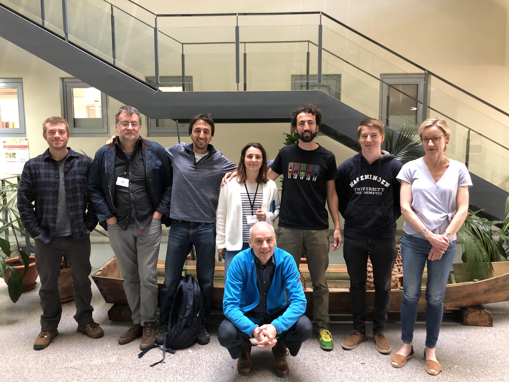
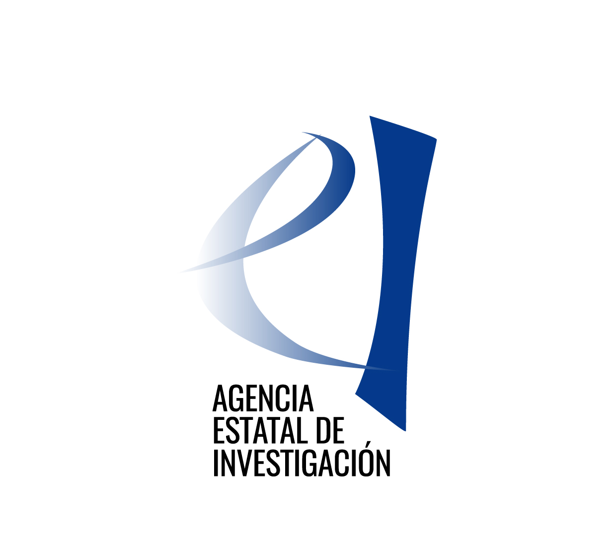
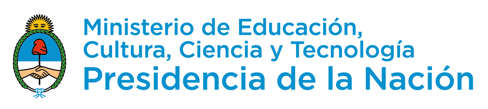
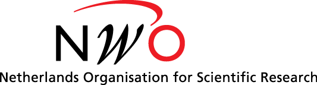

OBServ
Open library of pollinator Biodiversity and ecosystem Services scenarios
Funded by:


Coordinator: Ignasi Bartomeus (EBD-CSIC)
Partner: Lucas Garibaldi (URN)
Partner: Rachael Winfree (Rutgers)
Partner: David Kleijn (Wageningen)
Partner: Ferdinando Villa (BC3)
The OBServ project OBServ aims to co-develop a user-friendly open library of pollinator biodiversity and ecosystem service models which can be used to deliver local and global predictive maps based on different environmental scenarios. In order to achieve this we will specifically (i) capture stakeholder needs and broader socio-economic dimensions of biodiversity, (ii) expand biodiversity models beyond species richness, and (iii) compare and validate predictions of data- driven, statistical and mechanistic biodiversity models.
The Team:
What do we do at OBServ?
Papers published
- Bartomeus, I. and Dicks, L.V., 2019. The need for coordinated transdisciplinary research infrastructures for pollinator conservation and crop pollination resilience. Environmental Research Letters, 14(4), p.045017. link
- Garibaldi, L.A., Sáez, A., Aizen, M.A., Fijen, T. and Bartomeus, I., 2020. Crop pollination management needs flower‐visitor monitoring and target values. Journal of Applied Ecology, 57(4), pp.664-670. link
- Reilly, J.R., Artz, D.R., Biddinger, D., Bobiwash,
K., Boyle, N.K., Brittain, C., Brokaw, J., Campbell, J.W., Daniels, J.,
Elle, E. and Ellis, J.D., 2020. Crop production in the USA is frequently
limited by a lack of pollinators. Proceedings of the Royal Society B,
287(1931), p.20200922. link
- Fijen, T. 2020. Mass‐migrating bumblebees: An
overlooked phenomenon with potential far‐reaching implications for
bumblebee conservation. Journal of Applied Ecology. 00: 1– 7 Link
- Garibaldi, LA, Oddi, FJ, Miguez,
FE, Bartomeus, I, et al. Working landscapes need at
least 20% native habitat. Conservation Letters. 2020;e12773. Link
- Zamorano, J., Bartomeus, I., Grez, A.A. and
Garibaldi, L.A. (2020), Field margin floral
enhancements increase pollinator diversity at the field edge but show no
consistent spillover into the crop field: a meta‐analysis. Insect
Conserv Divers, 13: 519-531. Link
- Blasi, Bartomeus, Bommarco, Gagic, Garratt,
Holzschuh, Kleijn, Lindström, Olsson, Polce, Potts,
Rundlöf, Scheper, Smith, Steffan-Dewenter, Clough. 2021. Evaluating
predictive performance of models explaining wild bee pollinator
abundance in a mass-flowering crops. In press. Link
- Allen-Perkins, Magrach, Dainese,
Garibaldi, Kleijn, Rader,
Reilly, Winfree, … ,
Bartomeus. 2021. CropPol: A dynamic, open and global
database on crop pollination Link
- Fijen and Wallis de Vries. 2021. Kunnen vlindertellingen de stand van bijen en zweefvliegen voorspellen? Link.
- Magrach, Giménez-García,
Allen-Perkins, Garibaldi,
Bartomeus. 2022. Increasing crop richness and reducing
field sizes provide higher yields to pollinator-dependent crops. Link
- Garibaldi LA, Pérez‐Méndez N, Cordeiro GD, Hughes
A, Orr M, Alves‐dos‐Santos I, Freitas BM, Freitas de Oliveira F, LeBuhn
G, Bartomeus I, Aizen MA. 2021. Negative impacts of
dominance on bee communities: Does the influence of invasive honey bees
differ from native bees? Link
In prepration:. - Fijen, T.P.M., Nabaes Jodar, D, Garibaldi, L.A., Winfree, R., Kostic, K, Bartomeus, I, Kleijn, D. Farmers and citizens value pollinators differently – a quantitative approach in four countries. In prep.
- Turo K. J., Reilly J. R., Fjien, T., Magrach A., Giménez-García A., Winfree R. A global assessment of pollinator limitation in agriculture systems: Prevalence and risks. In prep.
- Hila Segre, David Kleijn, Ignasi Bartomeus, Michiel F. Wallis De Vries, Mark de Jong, Maarten Frank van der Schee, Jacinto Román, Thijs Fijen. Butterflies are not a robust bioindicator for assessing pollinator communities. In prep.
- Virginia Domínguez-Garcia, Francisco P. Molina, Oscar Godoy, Ignasi Bartomeus. Interaction network structure predicts species temporal persistence in empirical plant-pollinator communities (Submitted)
- Oddi, Magrach, Márquez Torres, Pompeu, Balbi, Villa, Garibaldi. Plataformas de modelado de servicios ecosistémicos: el norte de lacPatagonia como un ejemplo de aplicación (Submitted)
- Angel Giménez-García, Alfonso Allen-Perkins, Ignasi Bartomeus, Stefano Balbi, Jessica L Knapp, Violeta Hevia, Ben Alex Woodcock, Guy Smagghe, Marcos Miñarro, Maxime Eeraerts, Jonathan F. Colville, Juliana Hipólito, Pablo Cavigliasso, Guiomar Nates-Parra, José M. Herrera, Sarah Cusser, Benno I Simmons, Volkmar Wolters, Shalene Jha, Breno M. Freitas, Finbarr G. Horgan, Derek R. Artz, C. Sheena Sidhu, Mark Otieno, Virginie Boreux, David J. Biddinger, Alexandra-Maria Klein, Neelendra K. Joshi, Rebecca I A Stewart, Matthias Albrecht, Charlie C. Nicholson, Alison D. O?Reilly, Jessica Petsersen, David William Crowder, Katherine L.W. Burns, Diego Nicolás Nabaes Jodar, Lucas Alejandro Garibaldi, Louis Sutter, Yoko L. Dupont, Bo Dalsgaard, Jeferson Gabriel da Encarnação Coutinho, Amparo Lázaro, Georg K.S. Andersson, Nigel E. Raine, Smitha Krishnan, Matteo Dainese, Wopke van der Werf, Henrik Smith, and Ainhoa Magrach. Pollination supply models from local to global scale. (Submitted)
- Reilly, JR, Bartomeus, I, Simpson, D, Allen-Perkins, A, Garibaldi, L, Winfree, R. Wild insects and honey bees are equally important to crop yields in a global analysis. (Submitted)
- Nabaes Jodar D. N., Hipólito J., Zaragoza-Trello C., Oliveira da Silva F., Magalhaes-Freitas B., Viana B., Blande N., Souza T., Pires C., Velado-Alonso E., Bartomeus I., Garibaldi L. A. (2023). Biodiversity-inclusive agricultural practices and their dependence on farmer characteristics in South America. (In prep)
News
- The Open
Library of Pollination Models is in beta version!
- Ignasi Bartomeus presents CropPol at FAO
meeting.
- Several members of OBServ presented thier work at ESA2022 in
Montreal, Canada.
- Twitter chat about pollination services
- Our 2020 anual meeting was all virtual due to the pandemic, but it was a success!
- We are launching a Global Crop Pollintion Database
- OBServ was highly represented at ECOFLOR 2020
- See a demo of the amaizing kLab environemnt that we will be using:
link
- Group photo of our kick-off meeting:

Featuring Rachael Winfree, James Rilley, Ignasi Bartomeus, Ainhoa Magrach, Ferdinando Villa, David Kleijn, Lucas Garibaldi and Thijs Fijen.
How to acknowledge OBServ: “This research was funded through the 2017-2018 Belmont Forum and BiodivERsA joint call for research proposals, under the BiodivScen ERA-Net COFUND programme, and with the funding organisations AEI, NWO, ECCyT and NSF”
Funded by:


